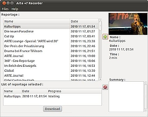

Arte+7 recorder
Archivierte Anleitung
Dieser Artikel wurde archiviert, da er - oder Teile daraus - nur noch unter einer älteren Ubuntu-Version nutzbar ist. Diese Anleitung wird vom Wiki-Team weder auf Richtigkeit überprüft noch anderweitig gepflegt. Zusätzlich wurde der Artikel für weitere Änderungen gesperrt.
Anmerkung: Die Anwendung wird nicht mehr weiterentwickelt und steht somit nur bis Ubuntu 11.10 zur Verfügung. Eine Alternative ist das Programm Qarte.
Zum Verständnis dieses Artikels sind folgende Seiten hilfreich:
arte+7recorder  ist ein Programm, um die vom deutsch-französischen Fernsehsender "arte" ausgestrahlten Sendungen herunterzuladen. Die ausgestrahlten Sendungen stehen bei arte noch sieben Tage nach der Ausstrahlung zur Verfügung.
ist ein Programm, um die vom deutsch-französischen Fernsehsender "arte" ausgestrahlten Sendungen herunterzuladen. Die ausgestrahlten Sendungen stehen bei arte noch sieben Tage nach der Ausstrahlung zur Verfügung.
Installation¶
Die Anwendung ist nicht in den offiziellen Paketquellen enthalten und muss daher über ein "Personal Package Archiv" (PPA) [1] installiert werden.
PPA¶
Adresszeile zum Hinzufügen des PPAs:
ppa:arte+7recorder/ppa
Hinweis!
Zusätzliche Fremdquellen können das System gefährden.
Ein PPA unterstützt nicht zwangsläufig alle Ubuntu-Versionen. Weitere Informationen sind der  PPA-Beschreibung des Eigentümers/Teams arte+7recorder zu entnehmen.
PPA-Beschreibung des Eigentümers/Teams arte+7recorder zu entnehmen.
Damit Pakete aus dem PPA genutzt werden können, müssen die Paketquellen neu eingelesen werden.
Nach dem Aktualisieren der Paketquellen kann das Programm über das folgende Paket installiert [3] werden:
arte+7recorder-5 (ppa)
 mit apturl
mit apturl
Paketliste zum Kopieren:
sudo apt-get install arte+7recorder-5
sudo aptitude install arte+7recorder-5
Falls Probleme beim Einbinden der Paketquellen auftreten, siehe Problembehebung. Anschließend wird es über den Anwendungs-Menüeintrag "Multimedia -> arte+7recorder" oder mit dem Befehl [3]
arte7recorder
gestartet.
|  |
| arte +7 recorder |
Bedienung¶
Beim ersten Start des Programms wird gefragt, welches der Standard-VideoPlayer ist und in welchem Verzeichnis die heruntergeladenen Dateien gespeichert werden sollen (Vorgabe: Homeverzeichnis). Der Dialog kann später bei Bedarf immer wieder über "Files -> Einstellungen" aufgerufen werden.
Nach dem Starten des Programms findet sich auf der linken Seite eine Übersicht über die derzeit verfügbaren Sendungen. Auf der rechten Seite gibt es für die einzelnen Sendungen Beschreibungstexte und -bilder. Mit einem Klick auf das Plus-Symbol wird die ausgewählte Sendung in die Download-Liste unten links aufgenommen. Ein weiterer Klick auf den "Download"-Knopf startet den Download-Vorgang.
Die Dateien werden - sofern nicht anders eingestellt - im Homeverzeichnis des Benutzers unverändert im übertragenen Format (Flash-Video, H264 mit 720x404 Pixeln, AAC Audio) mit der Dateiendung .flv abgespeichert.
Problembehebung¶
Falls nach dem Hinzufügen der PPA-Quelle die Installation des Programms nicht möglich ist, kann dies an dem "+" oder "_" -Zeichen in der PPA-Quelle liegen, an dem sich apt-get verschluckt. Dem kann durch durch das Umbenennen einer Datei abgeholfen werden. Hier ein Beispiel für Ubuntu 11.10 (oneiric):
sudo mv /etc/apt/sources.list.d/arte+7recorder-ppa-oneiric.list /etc/apt/sources.list.d/arte7recorder-ppa-oneiric.list
Links¶
Arte+7recorder im franz. Ubuntu-Wiki
arte

 - Homepage des deutsch-französischen Senders
- Homepage des deutsch-französischen SendersQarte - Sendungen von arte+7 und arteLiveweb lokal speichern, auch mit Ubuntu 12.04
MediathekView - alternatives Programm, das auch Zugriff auf die Inhalte anderer öffentlich-rechtlicher Sender bietet
- Erstellt mit Inyoka
-
 2004 – 2017 ubuntuusers.de • Einige Rechte vorbehalten
2004 – 2017 ubuntuusers.de • Einige Rechte vorbehalten
Lizenz • Kontakt • Datenschutz • Impressum • Serverstatus -
Serverhousing gespendet von